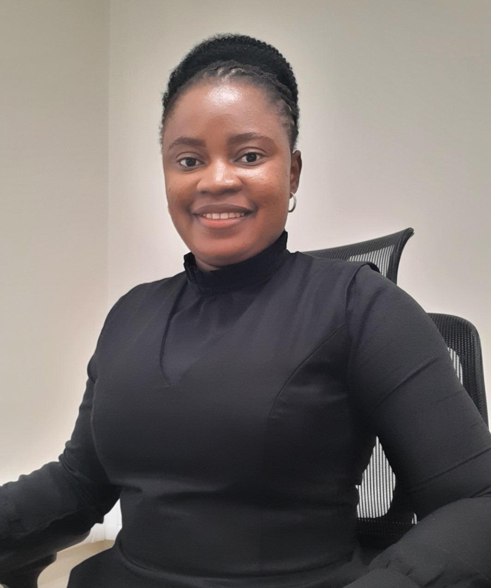

System Online: Meet Hope
Cybersecurity Student
Cybersecurity student, curious learner, and aspiring defender of digital spaces. Welcome to my portfolio — where I share my record of growth, curiosity, and vision for a secure digital future.

Brief Biography
Hello! I'm Hope, an undergraduate student studying cybersecurity at MIVA Open University. I am at the beginning of my academic journey, building foundational knowledge in information security, network defense, and ethical hacking basics.
My studies are guided by curiosity, problem-solving, and a drive to understand how systems can be both vulnerable and resilient. This portfolio is a space to document my growth, showcase my projects, and reflect on the challenges and small wins that come with starting out in cybersecurity.
Though I am still a beginner, I am committed to continuous learning and to contributing to a safer digital future.